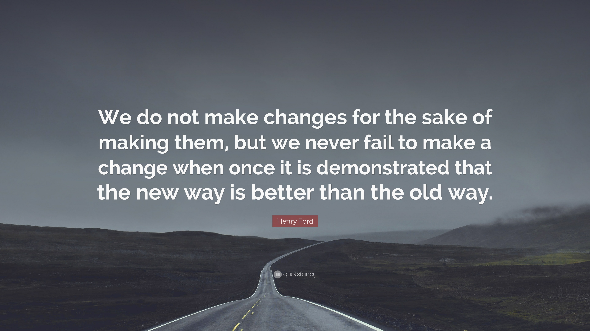

October 25, 2020
Blended Learning Universe. (Retrieved October 20, 2020) Blended Learning Models. (n.d.). https://www.blendedlearning.org/models/#ala
Harapnuik, D. (2013, April 5). Fixed Mindset vs Growth Mindset. It’s About Learning. http://www.harapnuik.org/?p=3627
Time to Make a Change
Sources
Blended Learning Universe. (Retrieved October 20, 2020) Blended Learning Models. (n.d.). https://www.blendedlearning.org/models/#ala
Harapnuik, D. (2013, April 5). Fixed Mindset vs Growth Mindset. It’s About Learning. http://www.harapnuik.org/?p=3627